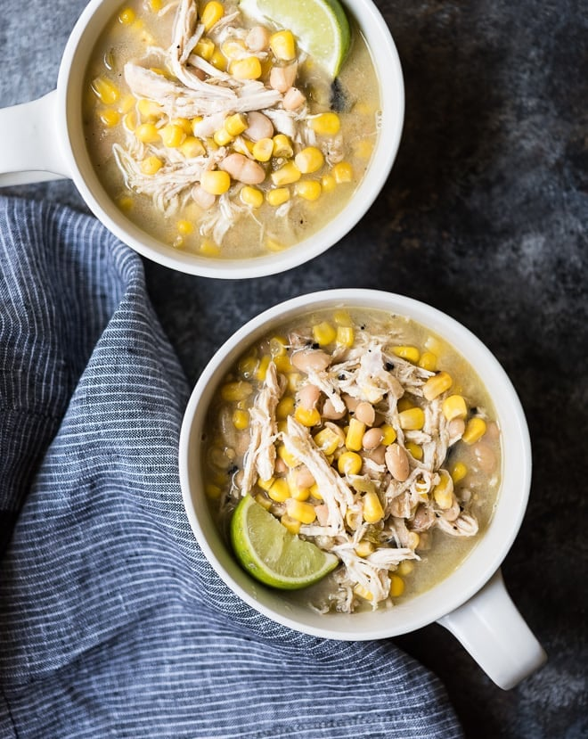

Coconut Lime White Chicken Chili

The easiest chicken chili with bright flavors. Absolutely no prep needed.
Thats right! All you need are the ingredients straight out of the jar (or can). Dump the ingredients
into a pressure cooker, turn it on, and let it cook!
Here's what you'll need:
- 3 boneless, skinless chicken breasts
- 1 can coconut milk
- 1 jar salsa verde
- 1 can white beans, rinsed and drained
- 1 bag frozen corn
- 1 lime
- tortilla chips (optional)
- your choice of seasonings
How to make this:
- Add everything besides the tortilla chips and lime into the pressure cooker, seal, and cook on high pressure for 12 minutes
- Let it natural release for 10 minutes, then remove chicken, shred, and return to pot. Stir and add lime juice. Serve with tortilla chips and enjoy!
Back to home